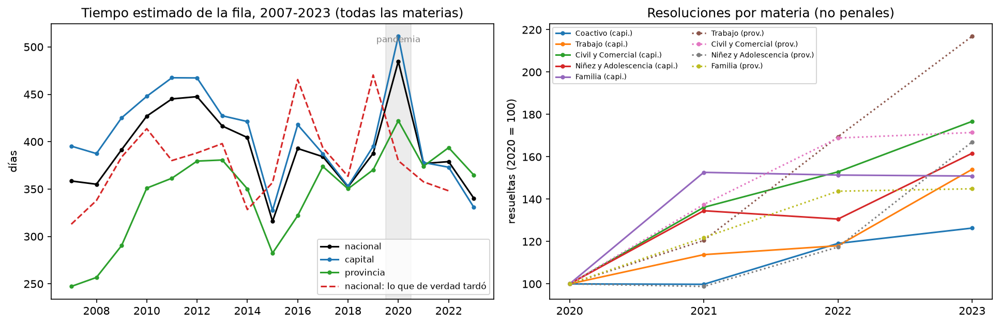
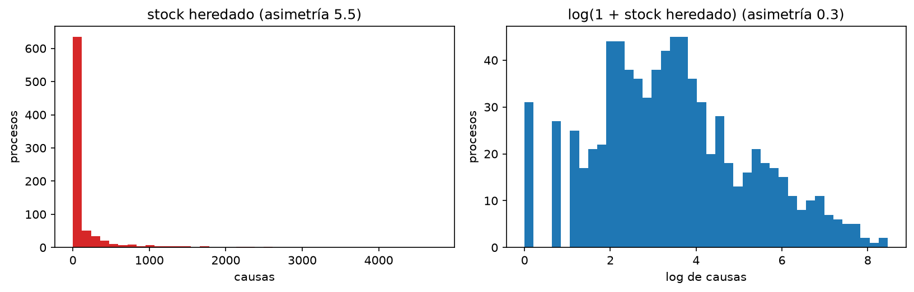
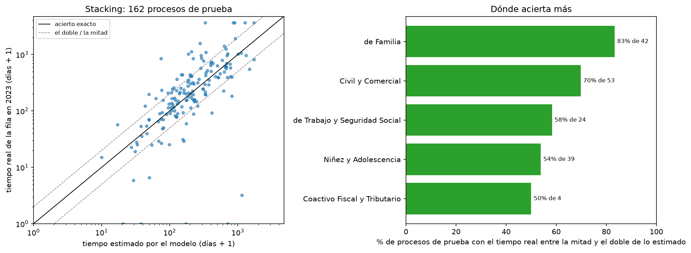

Universidad Mayor de San Andrés · Análisis de Datos · informe final
¿Cuánto va a tardar mi caso?
Estimar el tiempo de los procesos judiciales con el Anuario Estadístico Judicial y su historia 2007-2023: preprocesamiento, modelos de regresión (SVM, Bagging, Boosting y Stacking), evaluación y despliegue.
Docente: M.Sc. Madelina Loza Soliz
Andrés Maximiliano Espinoza Romero · Andrés Gabriel Maydana García · Maximiliano Gómez Mallo
Fuente: Consejo de la Magistratura de Bolivia, Anuario Estadístico Judicial 2023 · notebooks 19 a 23 · informe en informe/informe.pdf
La pregunta
Quien inicia un proceso judicial no tiene cómo saber cuánto va a esperar
Una persona presenta un divorcio en El Alto, una demanda laboral en Santa Cruz o un cobro en La Paz. La respuesta habitual a «¿cuánto tarda?» es «depende».
Depende del juzgado, de las partes y de las pruebas. Pero también de algo que sí se puede medir: cuántas causas tiene delante y a qué ritmo las resuelven los juzgados de su materia en su ciudad.
Estimar, para cada tipo de proceso y lugar, cuánto tardaría un caso nuevo, con un rango honesto, y ponerlo en una página web que cualquiera pueda usar.
La medida
El tiempo de la fila: causas que esperan ÷ causas que se resuelven por año
pendientes al cierre ÷ resueltas × 365
Si hay 600 causas esperando y el juzgado resuelve 1.200 al año, la fila se termina en medio año. Un caso nuevo se pone al final de esa fila.
Es la «duración estimada» del CEJA (Centro de Estudios de Justicia de las Américas). Es un número de días: el problema es de regresión, no de clasificación.
167 ÷ 784 × 365 = 78 días. Para un caso que entra en 2024, el modelo estima unos 67 días (entre 44 y 97).
El Anuario no sigue causas una por una: el tiempo es el del grupo (un tipo de proceso en un lugar), no el de un expediente.
La exposición
Cuatro pasos, cada uno en su notebook, y la historia como respaldo
notebook 19: la historia 2007-2023, EDA, limpieza y conversión
notebook 20: SVM, Bagging, Boosting, Stacking y sus hiperparámetros
notebook 21: prueba, importancia y tres versiones
notebooks 22 y 23: la página «¿cuánto tardará mi caso?»
- Todo el código está en notebooks ejecutados; las funciones compartidas, en
notebooks/modulos/modelado.ipynb. - Cada paso escribe sus resultados en
data/curated/modelo/y el informe LaTeX los lee de ahí: ninguna cifra se copia a mano. - Al final: qué dice esto a quien tiene un caso y a quien gestiona los juzgados.
Parte 1 de 3
Preprocesamiento
Primero la historia, que dice si la medida sirve; después el análisis exploratorio, la limpieza y la conversión de los procesos de 2023 (notebook 19).
Parte 1Pizarra: 1 · EDA · la historia
17 años de filas: el país tardaba 340 días en 2023, lo más bajo desde 2015
Se calculó el tiempo de la fila de cada año para el país, las capitales y las provincias.
Cuadros 9.1.4, 9.1.8 y 9.1.12 del capítulo 9 (todas las materias, 2007-2023; notebook 15).

- 359 días en 2007 → 448 en 2012 → 316 en 2015 → 485 en la pandemia (2020) → 340 en 2023.
- En 2023 las capitales (331) ya son más rápidas que las provincias (365).
- Derecha: de 2020 a 2023 las resoluciones no penales crecieron en todas las materias.
Parte 1Pizarra: 1 · EDA · la historia
Cuando se dijo que la fila tardaría tanto, tardó casi eso: 12 % de diferencia
Se comparó el tiempo estimado al cierre de cada año con lo que la fila de verdad tardó en vaciarse.
Se sumaron las resueltas de los años siguientes hasta llegar a las pendientes de ese cierre (notebook 19).
| País | Estimado | Lo que tardó | Diferencia |
|---|---|---|---|
| 2008 | 355 | 338 | +5 % |
| 2012 | 448 | 388 | +15 % |
| 2016 | 393 | 466 | −16 % |
| 2018 | 352 | 363 | −3 % |
| 2020 | 485 | 380 | +28 % |
| 2022 | 379 | 348 | +9 % |
11,7 %
diferencia mediana en 47 comprobaciones (país, capitales y provincias, 2007-2022). Tiende a pasarse un poco (+5 %): es algo pesimista.
Supone que las causas salen en orden de llegada; el Anuario dice cuántas se resolvieron, no cuáles.
Parte 1Pizarra: 1 · EDA · la historia
De un año al siguiente el tiempo cambia poco: el último Anuario sirve para el caso de hoy
Se probaron tres formas de anticipar el tiempo de un año con lo que se sabía antes.
Serie 2007-2023, 48 años-ámbito; error porcentual contra el tiempo real.
| Forma de anticipar | Qué supone | Error mediano | Sesgo |
|---|---|---|---|
| el tiempo del año anterior | la fila se mueve como el año pasado | 8,8 % | −0,4 % |
| stock ÷ ritmo del año anterior | se resuelve como el año pasado | 18,2 % | −10,6 % |
| fórmula ingenua: stock ÷ ingresos | se resuelve todo lo que entra | 25,0 % | −24,1 % |
- El peor año fue la pandemia (35 %): en años normales, el último dato es una buena guía.
- La fórmula ingenua siempre se queda corta: será una de las referencias que el modelo tiene que superar.
Parte 1Pizarra: 1 · EDA
En 2023 el tiempo mediano es de 221 días, pero va de días a años según el trámite

- Mediana por materia: coactivo fiscal 887 días, trabajo 375, civil 243, familia 195, niñez 146.
- Capital y provincia casi no difieren: 209 contra 236.
- Cola larga: unos pocos procesos tardan años. En logaritmo (centro) la forma se vuelve manejable.
Parte 1Pizarra: 1 · EDA
Lo que más acompaña al tiempo es la fila heredada en relación con lo que entra
Se midió la relación de cada variable numérica con el tiempo.
Correlación de Spearman (por rangos): las cantidades son muy asimétricas y un proceso enorme no debe dominar la medida.
| Variable | Spearman |
|---|---|
| presión del stock (stock heredado ÷ ingresos) | +0,64 |
| ingresos por juzgado | −0,26 |
| stock heredado, solo | +0,23 |
| ingresos del año | −0,21 |
| tendencia histórica de la materia | +0,16 |
- Donde la fila heredada es grande frente a lo que entra, se tarda más (+0,64).
- Los procesos con mucho movimiento resuelven rápido: más ingresos, menos tiempo.
- La variable más fuerte no está en el Anuario: es un cociente que hay que construir.
Parte 1Pizarra: 1 · Limpieza
Un «tiempo» calculado con dos causas es una anécdota: se exigen 10 o más
Entran al modelo los procesos con al menos 10 causas atendidas y alguna resuelta.
El filtro usa las atendidas (stock heredado + ingresos), un dato de entrada: no mira la respuesta.
Con 1 resuelta y 2 pendientes, el tiempo sería 730 días; con 2 resueltas, 243. Eso mide la suerte de una causa, no una fila. Los procesos chicos sí aparecen en la página, con una advertencia: la estimación se apoya en procesos parecidos.
Parte 1Pizarra: 1 · Limpieza
Se sacaron 19 columnas que contienen la respuesta (fuga de información)
Se excluyó toda columna calculada con las causas resueltas o con las pendientes al cierre.
Una lista explícita en el módulo de modelado, con el motivo de cada una; un assert verifica que ninguna entra.
| Columna | Por qué contiene la respuesta |
|---|---|
resueltas | el tiempo se divide por las resueltas |
pendientes_fin | el tiempo es pendientes al cierre ÷ resueltas |
duracion_estimada_dias | es el objetivo |
tasa_congestion, banderas… | todas usan las resueltas |
Si se dejaran, el modelo «acertaría» casi siempre… y no serviría: quien presenta su caso no sabe cuántas causas se van a resolver este año. Solo entra lo que se sabe al presentar el caso.
Parte 1Pizarra: 1 · Limpieza
Los vacíos estructurales son ceros, los atípicos no se borran y el tiempo se recorta en 10 años
Faltantes
Preliminares y cautelares solo existen en civil: en otras materias el vacío es un cero. El único faltante real (tribunales, 4 filas) se imputa con la mediana del entrenamiento.
Atípicos
Un proceso con miles de causas es real (verificado contra el PDF). No se borra: se agregan versiones en logaritmo y cociente.
Tope de 10 años
13 procesos pasan de 3.650 días (uno daba 80 años). Más que eso es «no se mueve», no un plazo: se recortan.

Parte 1Pizarra: 1 · Conversión
19 originales + 8 de ingeniería + 1 histórica = 28 variables
| Variable nueva | Fórmula |
|---|---|
| presión del stock | stock heredado ÷ (ingresos + 1) |
| ingresos por juzgado | ingresos ÷ juzgados |
| stock por juzgado | stock heredado ÷ juzgados |
| log del stock, log de los ingresos | log(1 + cantidad) |
| vacantes, por excusa, sin stock | proporciones y una marca 0/1 |
| tendencia histórica de la materia | resueltas del año anterior ÷ las de dos años antes − 1 |
- Todas se calculan fila por fila: la página web las recalcula con la misma fórmula.
- La histórica usa solo años pasados: para 2023, 2022 contra 2021; para un caso de 2024, 2023 contra 2022.
- El objetivo se pasa a log(1 + días): equivocarse por el doble pesa igual en 30 días que en 900.
Parte 1Pizarra: 1 · Conversión
Todo se convierte a números dentro de un Pipeline, y el 20 % se guarda para el final
- One-hot: materia, departamento y ámbito → columnas 0/1 (un código 1, 2, 3 inventaría un orden). 28 variables → 41 columnas.
- Escala: media 0 y desvío 1 para el SVM, la regresión lineal y el Stacking: miden distancias.
- Todo dentro de un
Pipeline: se ajusta solo con el entrenamiento de cada pliegue.
Estratificada por quintiles del tiempo: las dos partes tienen la misma mezcla de procesos rápidos y lentos (mediana 224 y 210 días).
Parte 2 de 3
Modelo
Seis modelos y tres referencias, todos midiendo lo mismo: cuántos días tarda la fila (notebook 20).
Parte 2Pizarra: 2 · Modelo
Cómo se mide el error: «dentro del doble» y el error en logaritmo
Métrica principal: error absoluto medio en log(1 + días) (MAE). Es la que minimiza el ajuste.
Para leerla en palabras:
- Dentro del doble: de cada 100 procesos, en cuántos el tiempo real quedó entre la mitad y el doble de lo estimado.
- Factor mediano: la mitad de las estimaciones se equivoca por menos que este factor (×1,5 = hasta 50 % de más o de menos).
- R²: qué parte de las diferencias entre procesos explica (0 = nada, 1 = todo).
| Referencia | Qué hace |
|---|---|
| Línea base | dice siempre el tiempo promedio |
| Fórmula ingenua | stock heredado ÷ ingresos × 365, sin aprender nada |
| Regresión lineal (Ridge) | suma ponderada de las variables, con freno a los pesos grandes |
Parte 2Pizarra: 2 · SVM
SVM: una curva con un «tubo» de tolerancia; la mejor es suave

- En regresión (SVR) busca una curva que deje a casi todos los procesos dentro de un tubo de ancho ε: los errores menores no se castigan.
C: cuánto castiga a los que quedan fuera.gamma: qué tan ondulada puede ser la curva.- Grilla de 48 combinaciones: el error va de 1,025 a 0,751. Mejor: C = 10, gamma = 0,01, ε = 0,1.
- Con gamma alto la curva se ondula y sobreajusta.
Parte 2Pizarra: 2 · Bagging y Boosting
Bagging promedia muchos árboles; Boosting los encadena para corregir errores
Bagging y Random Forest
Cada árbol aprende con una muestra con reemplazo de los procesos; la estimación es el promedio. El Random Forest además hace que cada corte mire solo algunas variables.
Lo que más ayudó: que cada árbol use la mitad de las filas (Bagging 0,804 → 0,752).
AdaBoost y Gradient Boosting
Árboles en secuencia: AdaBoost da más peso a los procesos peor estimados; Gradient Boosting ajusta cada árbol al error residual.
AdaBoost mejoró más que nadie con el ajuste (0,890 → 0,755). Gradient Boosting eligió la pérdida Huber: los procesos extremos no arrastran a los demás.
Parte 2Pizarra: 2 · Stacking e hiperparámetros
Stacking combina tres modelos; los hiperparámetros se eligen sin tocar la prueba
Stacking
SVM + Random Forest + Gradient Boosting (ya ajustados) dan una estimación cada uno, y una regresión lineal aprende cuánto confiar en cada uno, con predicciones fuera de pliegue.
Resultado: 0,738, apenas mejor que sus componentes (0,746-0,752): los tres aprenden casi lo mismo.
Hiperparámetros
Perillas que se fijan antes de entrenar (cuántos árboles, profundidad, castigo).
- SVM: búsqueda en grilla, 48 combinaciones.
- Resto: búsqueda aleatoria, 30 combinaciones.
- Siempre con validación cruzada de 5 pliegues en el entrenamiento.
Parte 2Pizarra: 2 · Resultados
Todos los modelos superan a las referencias; seis empatan arriba

| Validación cruzada | MAE log | Dentro del doble |
|---|---|---|
| Línea base | 1,085 | 43 % |
| Fórmula ingenua | 0,888 | 58 % |
| Regresión lineal | 0,787 | 61 % |
| Stacking | 0,738 | 64 % |
| Gradient Boosting | 0,746 | 65 % |
| SVM | 0,751 | 64 % |
| Bagging / Random Forest | 0,752 | 62-63 % |
| AdaBoost | 0,755 | 63 % |
Las diferencias entre los seis (≤ 0,02) son menores que el desvío entre pliegues (≈ 0,08): ninguno gana con claridad.
Parte 3 de 3
Evaluación y despliegue
Los 162 procesos guardados, qué variables pesan, cuántas hacen falta, y la página que responde «¿cuánto tardará mi caso?» (notebooks 21 a 23).
Parte 3Pizarra: 3 · Evaluación
Con procesos que nunca vio, 2 de cada 3 quedan entre la mitad y el doble

Familia (83 %) y civil (70 %) se estiman mejor que niñez (54 %) y trabajo (58 %).
Parte 3Pizarra: 3 · Evaluación
Cuanto más grande el trámite, mejor la estimación: 88 % en los de más de 500 causas
Procesos de prueba con el tiempo real entre la mitad y el doble de lo estimado. En un trámite con miles de causas la fila es estable; en uno con 15, una sola causa cambia mucho el tiempo.
El rango que se muestra es más ancho en los trámites chicos y más angosto en los grandes.
Parte 3Pizarra: 3 · Importancia
Lo que más pesa es la carga frente a la capacidad, y sale de solo tres datos

Permutación: se baraja una variable y se mide cuánto sube el error. Se calcula en la validación, nunca en la prueba.
- log del stock heredado (+0,155)
- presión del stock (+0,146)
- log de los ingresos (+0,123)
- ingresos por juzgado (+0,055)
- stock por juzgado (+0,026)
Las cinco salen de: la fila que espera, lo que entra y los juzgados. La variable histórica queda en el puesto 17: la historia sirvió para validar la medida, no como pista.
Parte 3Pizarra: 3 · Versiones
Con 5 variables casi no se pierde; sin ingeniería, sí

| Stacking | CV | Prueba |
|---|---|---|
| 19 originales | 0,796 | 0,770 |
| 28 con ingeniería e historia | 0,738 | 0,694 |
| 5 más importantes | 0,770 | 0,716 |
- Sin ingeniería, la regresión lineal se hunde (0,921): no puede construir los cocientes sola.
- Las 5 más importantes quedan cerca de las 28: concentran la señal.
Parte 3Pizarra: 3 · Robustez
El modelo sirve para tipos de proceso que no vio al entrenar
El mismo tipo («divorcio») está en varios lugares. Con validación por grupos (GroupKFold) todas sus filas quedan del mismo lado: se evalúa con tipos nuevos.
| Modelo | CV normal | Por grupos | Diferencia |
|---|---|---|---|
| Stacking, 28 variables | 0,738 | 0,764 | +0,026 |
| Stacking, 5 variables | 0,770 | 0,778 | +0,007 |
| Random Forest, 28 variables | 0,752 | 0,766 | +0,014 |
| SVM, 28 variables | 0,751 | 0,812 | +0,061 |
El error sube poco en los ensambles: lo que aprenden vale para trámites nuevos. El SVM es el que más depende de haber visto el tipo.
Parte 3Pizarra: 4 · Despliegue
El modelo de 5 variables se exportó con su rango y corre en el navegador
Gradient Boosting, 100 árboles: el mejor de 5 variables entre los que se pueden pasar a un archivo. En la prueba: 68 % dentro del doble, error mediano de 81 días.
La mitad central de sus errores en procesos que no vio, por tamaño: de ×0,43 a ×2,35 en los chicos, de ×0,66 a ×1,44 en los de más de 500. En la prueba cayó dentro el 57 % (se buscaba la mitad).
Control: una versión que lee solo el JSON da lo mismo que scikit-learn en los 162 procesos de prueba (diferencia máxima 4·10−15), y la página recalcula sus 1.240 estimaciones al abrirse: 1.240 / 1.240 coinciden.
Parte 3Pizarra: 4 · Despliegue
La página pública: eliges tu trámite y tu lugar, y ves cuánto tardaría tu caso
Un caso que entra al empezar 2024: la fila que espera es lo que quedó pendiente al cierre de 2023, con los mismos juzgados y los ingresos de 2023 (notebook 23).
En los trámites con tiempo medido en 2023, el 76 % de las estimaciones queda entre la mitad y el doble, y el 93 % en los de más de 500 causas: de un año al siguiente el tiempo cambia poco.
- «Si tu caso entra ahora, tardaría…» con su rango y lo que tardaba en 2023.
- El ritmo de tu materia: resueltas 2020-2023.
- El mismo trámite en otros lugares.
- La historia 2007-2023 con la comprobación del vaciado.
- Dónde un caso nuevo tardaría más, para quien gestiona.
Parte 3Pizarra: 4 · Despliegue
Se publicó en un VPS con Docker Compose: proyanalisis.maxi42.space
La carpeta despliegue/ empaqueta la página en un contenedor. En el VPS, Dokploy toma el repositorio de GitHub, levanta el docker-compose.yml y lo publica con dominio y HTTPS.
El modelo corre en el navegador: el servidor solo entrega archivos. Es simple, barato y no recibe ni guarda lo que se consulta.
- Contenedor de solo lectura, sin privilegios y con cabeceras de seguridad.
- Reentrenar = correr los notebooks 22 y 23 y hacer
git push.
Cierre
Qué le dice esto a quien tiene un caso
Cinco hallazgos sobre el tiempo de la justicia que salen del modelo, de la historia y del análisis exploratorio.
Hallazgo 1 de 5Notebook 19 · la historia
El tiempo de la fila es una guía confiable, y el país viene mejorando
- De 2020 a 2023 las resoluciones crecieron en todas las materias no penales: civil en capitales +77 %, trabajo en provincias +117 %.
- Salvo en años excepcionales (como la pandemia), el último Anuario es una buena guía para quien presenta su caso.
Hallazgo 2 de 5Notebooks 19 y 23
Importa mucho qué trámite y dónde: el mismo proceso tarda días en un lugar y meses en otro
| Proceso ejecutivo (civil), caso nuevo | Estimado |
|---|---|
| Sucre | 27 días |
| Cochabamba (ciudad) | 33 días |
| El Alto | 34 días |
| La Paz (ciudad) | 5 meses |
| Provincias de La Paz | 8 meses |
- Por materia, la mediana va de 146 días (niñez) a 887 (coactivo fiscal).
- Lo que más explica la demora es el tipo de proceso (hasta 57 % de la variación); ser capital o provincia, casi nada (notebook 16).
- El rezago está concentrado: el 6 % de los procesos tiene el 73 % de lo pendiente.
Atacar unos pocos trámites y lugares rinde mucho más que repartir el esfuerzo entre todos.
Hallazgo 3 de 5Notebook 21 · importancia
Se tarda donde la fila heredada es grande frente a lo que el juzgado puede sacar
+0,64
correlación con el tiempo (la más fuerte)
≈ 0
aporte al modelo
- Las cinco variables del modelo publicado salen de la fila que espera, lo que entra y los juzgados: la carga frente a la capacidad.
- Un distrito grande con muchos juzgados puede ser más rápido que uno chico con un solo juzgado saturado.
Vigilar la fila de cada juzgado de cada materia frente a lo que resuelve, no los totales del departamento.
Hallazgo 4 de 5Notebooks 18 y 21
Más personal en el departamento no explica el tiempo: el refuerzo tiene que ir a juzgados concretos
- El personal ya crece con la demanda. Lo que cambia el tiempo es a qué juzgados y materias llega.
El personal solo se publica por departamento (n = 9). Lo correcto es «con estos datos no se ve efecto», no «el personal no importa».
Hallazgo 5 de 5Notebooks 01 a 07, 14 y 15
Los datos judiciales todavía no alcanzan para responder bien a la gente
Publicar el Anuario en formato abierto, con las resueltas en penal y la serie histórica por tipo de proceso: así la estimación se podría validar trámite por trámite y actualizar cada año.
Aplicación
Para qué sirve y para qué no
Para la gente
Saber, antes de empezar, si su trámite suele tardar semanas, meses o años en su ciudad, y preguntar con datos. Un orden de magnitud, no un plazo legal.
Para quien gestiona
La tabla «dónde un caso nuevo tardaría más» ordena a dónde mandar juzgados de refuerzo, redistribuir causas o empujar la conciliación.
Indicadores simples
La presión del stock y los ingresos por juzgado se calculan con una división: se pueden vigilar aun sin el modelo.
Prometer un plazo a un expediente concreto ni evaluar a un juez: cada fila es un grupo de causas, y el modelo deja fuera del doble a uno de cada tres trámites.
Límites
Lo que este análisis no puede decir
- Es el tiempo de la fila, no el de un expediente. Supone que las causas salen en orden; un caso puede ir más rápido o más lento.
- El detalle por tipo de proceso es de un solo año. La historia valida la medida para el país, no para cada trámite; los datos son de 2023, el Anuario más reciente con este detalle.
- Los trámites chicos son poco firmes: con menos de 30 causas el rango va de casi la mitad a más del doble.
- Solo materias no penales, porque las penales no publican causas resueltas.
- Muestra pequeña: con 162 procesos de prueba, diferencias de 0,02 entre modelos no son significativas.
- Mide celeridad, no calidad de las decisiones.
En resumen
Ya se puede estimar cuánto tardará un caso, con un rango honesto
- La medida funciona: en 17 años, la fila tardó casi lo estimado (12 %) y cambia poco de un año al siguiente (9 %).
- El modelo acierta en 2 de cada 3 trámites dentro del doble, y en casi 9 de cada 10 de los grandes.
- Se tarda donde la fila heredada es grande frente a la capacidad; tres datos bastan para estimarlo.
- Importa qué trámite y dónde: el mismo proceso tarda días en una ciudad y meses en otra.
- Faltan datos abiertos por tipo de proceso y en penal para validarlo trámite por trámite.
Informe: informe/informe.pdf · página pública: proyanalisis.maxi42.space · el modelo en vivo · la guía de estudio · ¿Preguntas?